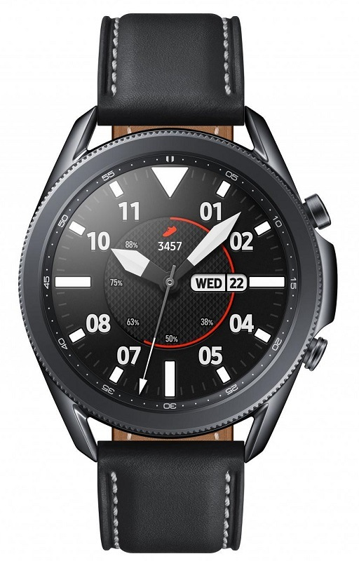

Telefonai.eu - Telefonai, išmaniųjų telefonų naujienos ir apžvalgos
 Aktualu: Samsung Galaxy Note20 Ultra Ulefone Note 8P „Redmi Note 9s“ apžvalga Android 11 telefonai Pradinis Naujienos Akcijos Apžvalgos Patarimai Nuomonės Daugiau ⮟ Straipsniai Transportas Kompiuteriai Planšetės Technologijos Žaidimai Telefonai Naujiena „OnePlus” plečia produktų liniją „Nord” – aukščiausios klasės išmanieji telefonai bus prieinamesni platesnei auditorijai Paskelbė Lukas Snarskis Žaidimai „Ndemic Creations“ kuria žaidimą, kuriame reikia kovoti su plintančia pandemija Paskelbė Rokas Gaidys Naujiena Skandalas: „Google” moka milijardus „Apple” ir dar bijo prarasti susitarimą Paskelbė Justas Stasiulaitis Naujiena „Apple“ ir „iPhone 12“ bėdos nesibaigia: naujųjų telefonų savininkai skundžiasi dėl ekrano atsparumo Paskelbė Justas StasiulaitisNaujausios apžvalgos
„Sonos Move” apžvalga 2020-10-21, Justas Stasiulaitis „Apple Watch Series 6“ apžvalga 2020-10-06, Justas Stasiulaitis Mūsų: 9 „Samsung Galaxy Note20 Ultra” apžvalga 2020-10-04, Ignas Petrikonis Mūsų: 6.5 „Nokia 2.3“ apžvalga 2020-10-02, Justas StasiulaitisNaujienos
„Jaguar“ pristato naująjį „E-Pace“: dar greitesnis ir saugesnis kompaktinis SUV
„Jaguar“ pristato naująjį „E-Pace“ – atnaujintos išorės ir salono, su šiuolaikiška „Pivi Pro“ multimedijos sistema, visiškai nauja automobilio platforma, didele galingų ir efektyvių variklių gama išsiskirian ... 2020-10-29 | Lukas Snarskis | Peržiūrų: 13 | Komentarų: 0„Assassin‘s Creed“ atvyksta į „Netflix“
Vaizdo žaidimų ekranizacijos nėra didžiulė naujiena. Dar rugsėjį buvo paskelbta apie naują „Resident Evil“ serialą, o panašu, kad dar viena velniškai populiari franšizė paseks jos pavyzdžiu. Dar 2016 metais pasi ... 2020-10-29 | Rokas Gaidys | Peržiūrų: 29 | Komentarų: 0„Huawei“ ruošiasi „HarmonyOS“ naudojimui: „EMUI 11“ gali būti paskutinė EMUI versija
„Huawei” dar visai neseniai oficialiai patvirtino faktą, kad į kai kuriuos jos gaminamos išmaniuosius, kuriuose veiks netrukus juos pasieksianti „EMUI 11” vartotojo sąsaja, bus galima instaliuoti bendrovės kuri ... 2020-10-29 | Lukas Snarskis | Peržiūrų: 54 | Komentarų: 0Turite „PayPal“ paskyrą, kurios nenaudojate? Netrukus ji bus apmokestinta
Populiarios mokėjimo paslaugos „PayPal“ vartotojai kai kuriose šalyse turi tikėtis naujų mokesčių, o tai palies ir lietuvius. Kompanijos atstovų pristatyti pasikeitimai vartotojus pasieks jau nuo gruod ... 2020-10-29 | Lukas Snarskis | Peržiūrų: 161 | Komentarų: 0„Xbox“ ateities planai: neatmetama žaidimų dalijimosi galimybė ir su kitomis platformomis
Turbūt daugelis vaizdo žaidimų fanai pastebėjo, kad „Xbox“ ir „Playstation“ varžybose dėl naujos kartos konsolių titulo abi įmonės pasirinko skirtingus kelius. Kol „Sony“ vysto turimus projektus ir pa ... 2020-10-29 | Rokas Gaidys | Peržiūrų: 39 | Komentarų: 0NEW Naujausi telefonai
Huawei Mate 40 RS Porsche Design Huawei Mate 40 Pro+ Huawei Mate 40 Pro TOP 3 1 Xiaomi Mi 10 Ultra 2 Samsung Galaxy Note20 Ultra 3 Xiaomi Poco X3 NFC nuo 197€ TOP 3 1 OnePlus 8 Pro nuo 780€ 2 OnePlus Nord nuo 506€ 3 Xiaomi Mi 10 UltraTop Akcijos
Akcija Ieškantiems nebrangaus ir kokybiško išmaniojo laikrodžio: turime idealų variantą Jums! Autorius: Lukas Snarskis Akcija Tokio laikrodžio dar nematėte: „Ticwris Max S“ gali pakeisti Jūsų telefoną, o jo kaina nustebins daugelį Autorius: Lukas Snarskis Akcija Ženkite į ateitį: galinga ir 6K palaikanti išmani TV dėžutė - vos už €31,45 Autorius: Ignas Petrikonis Akcija Išskirtinis televizorių pasiūlymas Jums: mažos kainos ir namų kino sistema dovanų Autorius: Ignas Petrikonis Akcija Kai neįsigyti neįmanoma: ribotas „Xiaomi” belaidžių ausinukų kiekis už €18 Autorius: Ignas Petrikonis Akcija Idealus variantas ieškantiems kokybiško siurblio: kokybiškas rankinis dulkių siurblys su greitu pristatymu ir dovanomis! Autorius: Lukas Snarskis Akcija Kitą savaitgalį namų valymą patikėkite robotui: turime itin pigų pasiūlymą Autorius: Ignas Petrikonis Akcija Ultragarsinis dantų šepetėlis už 7 eurus? Taip, mes galime tai pasiūlyti Autorius: Ignas PetrikonisDaugiau žinių
Akcija Ieškantiems nebrangaus ir kokybiško išmaniojo laikrodžio: turime idealų variantą Jums! 2020-10-28, Lukas Snarskis Kompiuteriai „Microsoft“ nuotolinio darbo tyrimas: išlikome produktyvūs, bet inovuoti tapo sunkiau 2020-10-28, Lukas Snarskis Žaidimai Ketvirtas kartas garantuoja? „Cyberpunk 2077“ išleidimo data ir vėl yra nukeliama 2020-10-28, Rokas Gaidys Naujiena „Google“ ir vėl turi bėdų: „Pixel 5“ kenčia nuo nemigos ir turi problemų su NFC 2020-10-28, Lukas Snarskis Naujiena „Huawei“ paskelbė trečiojo 2020 metų ketvirčio rezultatus: pajamos augo beveik 10 proc. 2020-10-28, Lukas Snarskis Žaidimai Skelbiamas „FIFA20“ ir „FIFA21“ turnyras: registruotis galima jau dabar! 2020-10-28, Lukas Snarskis Naujiena Pasitikrinkite: ar išnaudojate šiuos išmaniųjų belaidžių ausinių privalumus? 2020-10-28, Lukas Snarskis Kompiuteriai „Nvidia“ to tikrai nesitikėjo: netyčia paaiškėjo dar neišleistos vaizdo plokštės specifikacijos 2020-10-28, Lukas Snarskis 1 2 3 4 5 6 7 8 ... 812 813Copyright © Telefonai.eu 2020 . Visas turinys, jeigu nėra nurodytas kitas šaltinis, yra portalo nuosavybė ir jį kopijuoti bei sutikimo yra draudžiama. Pranešimai spaudai ir kita – press[eta]telefonai.eu.
Apie projektą Tapk Autoriumi! Reklama Naudojimosi taisyklės Kontaktai